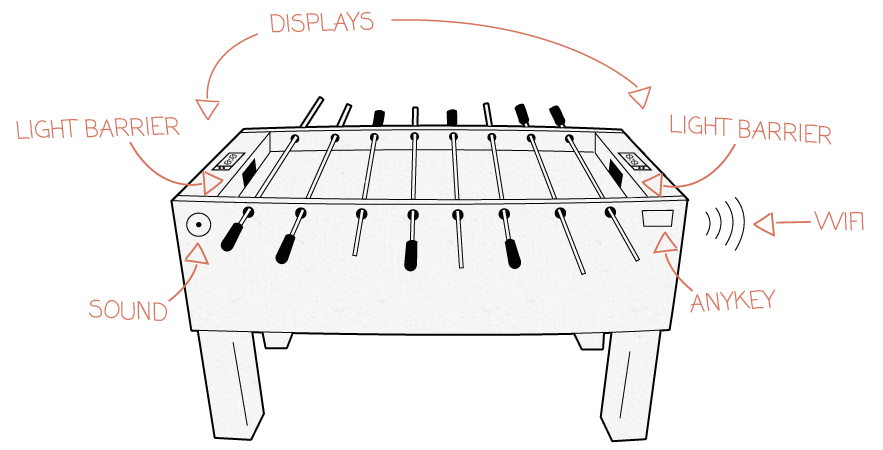
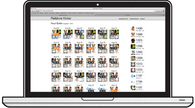

The Real Kicker
The digital Kick your Foosball Table needs
The LampOur speacially designed lamp is WiFi controlled and reacts sensitively on movements like goals or strong kicks during the game.

The Real KickerAnd this is how it works: a special photo sensor recognizes and tracks when a goal is scored. As soon as the ball passes the sensor, it sends a signal to a built-in Arduino board. Then the small microcontroller notifies our server via WiFi and the data can be processed from our software. Sounds easy, doesn’t it?

The WebappAdditional to the Real Kicker you can use the webapp. Here you can set up a new match before you begin a game and it counts all goals automatically. In the teamranking you can see who the best player is!